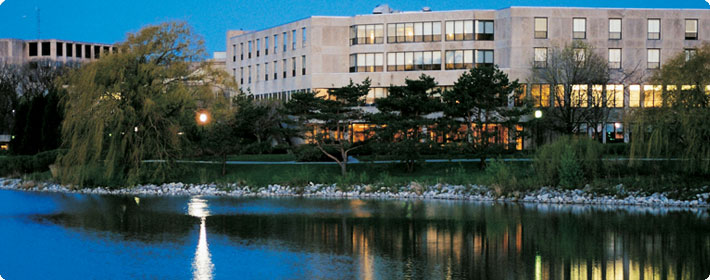
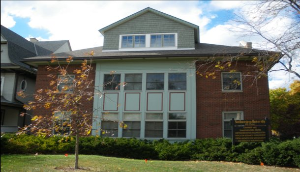
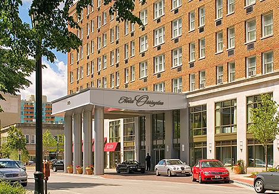

The Complexity Conference will be held at the James L. Allen Center on the shores of Lake Michigan at Northwestern University. The Allen Center is a 15-20 minute walk from the conference hotel, the Hilton Hotel Orrington in Evanston. The hotel's van is available to take guests to the Allen Center.
James L. Allen Center |
 |
The Complexity Tutorial on March 5 will be held at the NICO offices.
NICO |
 |
A block of rooms has been reserved for the nights of March 4-7 at The Hotel Orrington.
To get the conference rate of $109/night, call 1-800-HILTONS (1-800-445-8667) and mention "NICO Complexity Conference 2011."
|
 |
Getting to Evanston:
From Midway and O'Hare airports, your options include taxi and the L (Chicago's elevated train system run by the Chicago Transit Authority [CTA]).
More travel information can be found here.
Complexity ConferenceMarch 6-7, 2011Northwestern University, Evanston, IL |